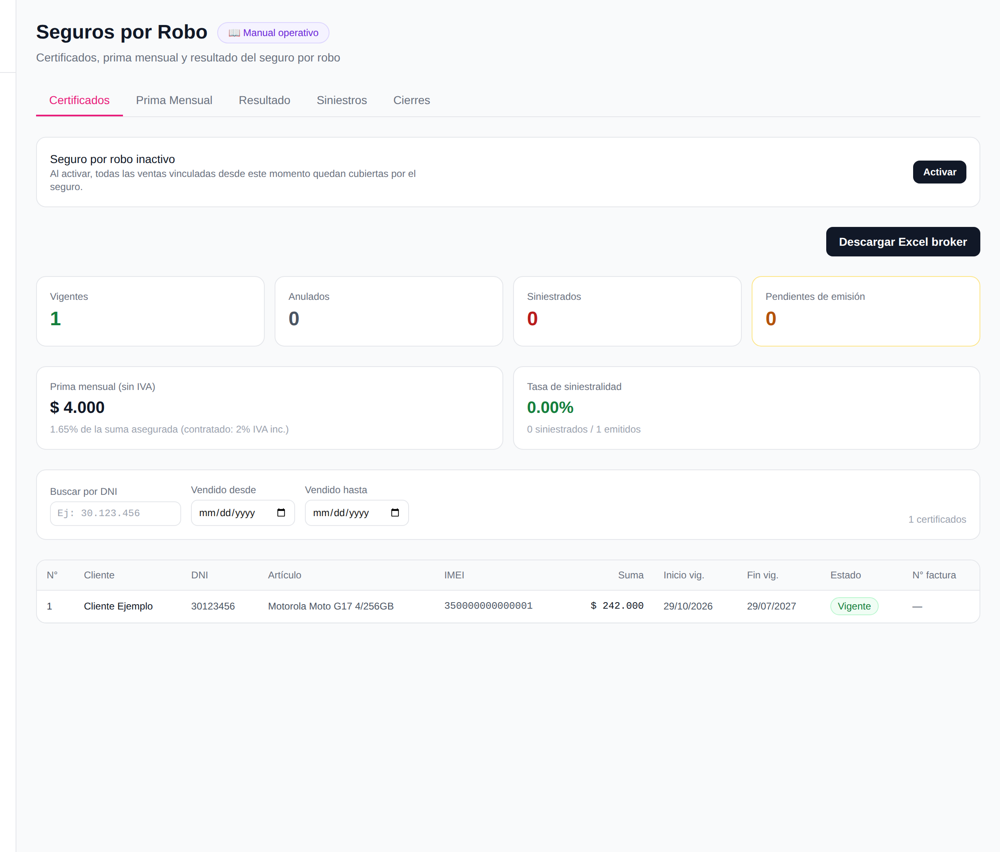
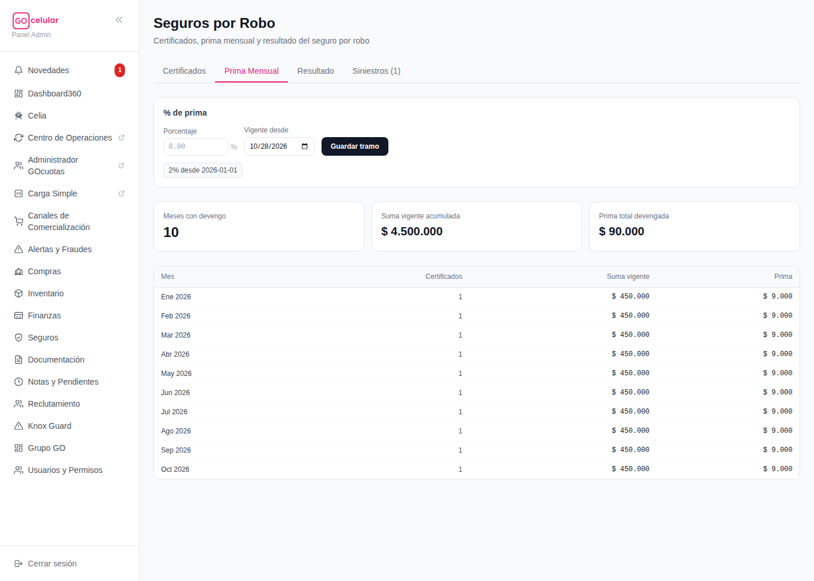
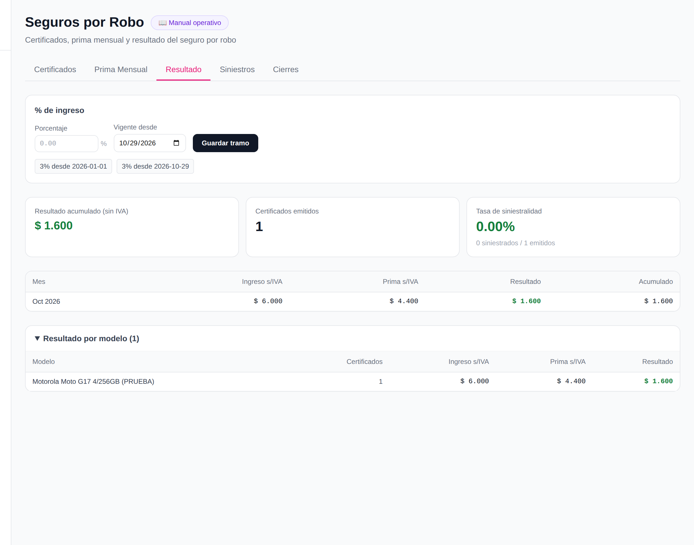
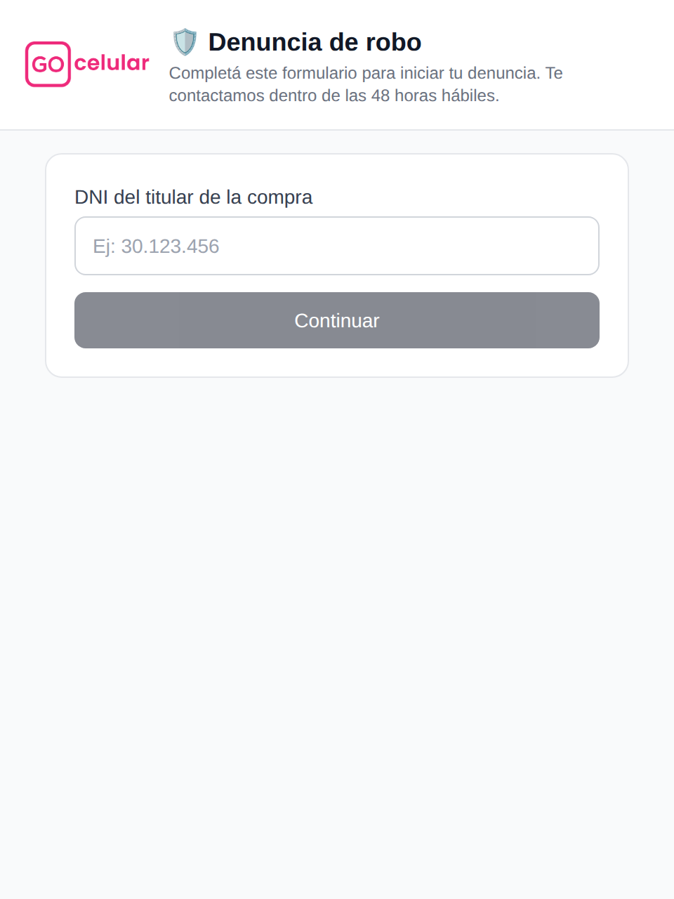
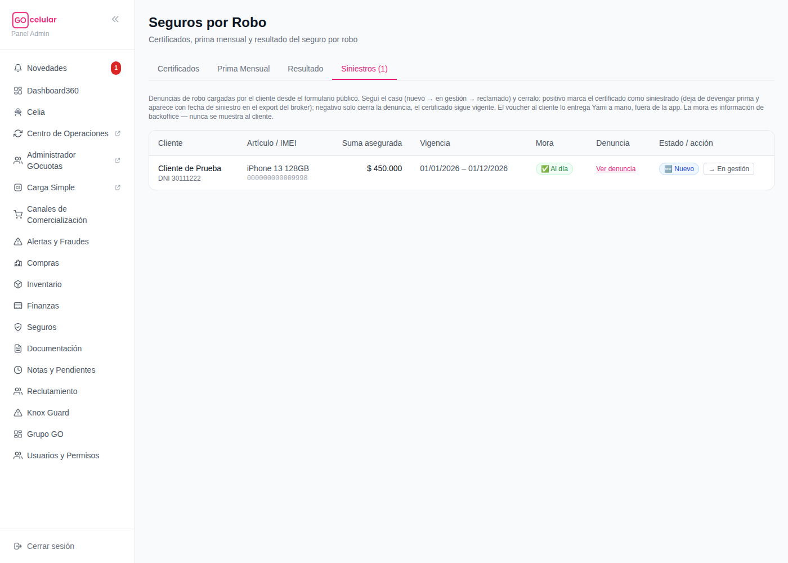
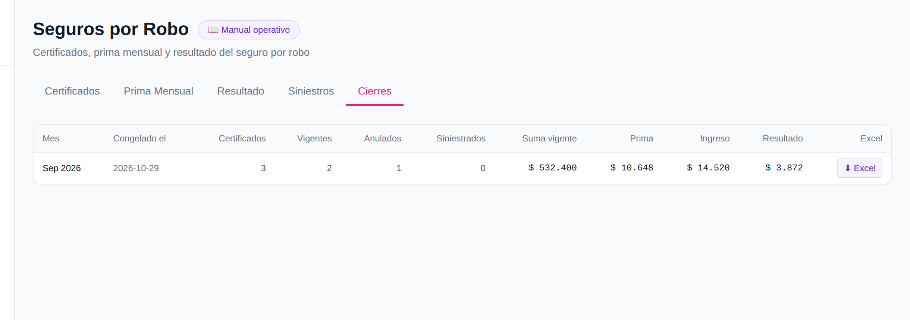

GOcelular360 · Manual operativo
🛡️ Seguros por Robo — qué es y cómo operarlo
La página Seguros (menú lateral, debajo de Finanzas) controla el seguro por robo que se le ofrece a cada cliente que compra un celular: quién está cubierto, cuánto se cobra y se paga de prima, el resultado del negocio y la gestión de las denuncias de robo que llegan desde el formulario público. Pensado para operar sin ayuda.
🛡️ Qué es el seguro por robo
Cuando el seguro está activo, cada venta de celular vinculada desde ese momento genera automáticamente un certificado: una póliza individual que cubre ese equipo (por IMEI) contra robo, por el tiempo de vigencia de la compra. GOcelular le cobra al cliente una prima (un % sobre la suma asegurada del equipo) y a su vez le paga una prima al broker asegurador — la diferencia entre lo que entra (ingreso) y lo que se paga (prima) es el resultado del negocio, que la página calcula mes a mes.
Si el cliente sufre un robo, completa un formulario público con su DNI y una foto/PDF de la denuncia policial. Eso genera un siniestro que ves en la pestaña Siniestros de esta página, y le llega un mail de aviso a Yami para gestionarlo.
🔛 Activar y desactivar el seguro
Arriba de todo en la pestaña Certificados está el switch maestro: controla si el seguro está activo o no para toda la operación.
- Activar: tocás "Activar" y queda activo al instante, sin confirmación — es una acción de bajo riesgo porque solo empieza a cubrir ventas nuevas. Importante: al activar, todas las ventas vinculadas desde ese momento en adelante quedan cubiertas por el seguro (no retroactivo a ventas anteriores). La fecha exacta de activación queda guardada y se muestra debajo del estado ("Activado el DD/MM/AAAA").
- Desactivar: tocás "Desactivar" y el botón pide confirmación en dos pasos ("¿Confirmar desactivación?") antes de aplicarse — es una acción más delicada porque corta la emisión de certificados nuevos para ventas futuras. Los certificados ya emitidos no se tocan: siguen vigentes, siguen devengando prima y pueden recibir denuncias de robo igual.

📋 Leer la tabla de Certificados
Las 4 tarjetas arriba de la tabla resumen de un vistazo cuántos certificados hay en cada estado:
| Tarjeta / chip | Qué significa |
|---|---|
| Vigente | El equipo está cubierto hoy: dentro de su ventana de vigencia, sin anular y sin siniestro. |
| Anulado | El certificado se dio de baja (por ejemplo, la venta se descartó o hubo un contracargo). Ya no cubre nada. |
| Siniestrado | Tuvo un robo confirmado: alguien cerró un siniestro como "positivo" sobre este certificado (ver más abajo). Deja de devengar prima desde la fecha del robo. |
| Revisar estos. La venta existe pero todavía no se pudo determinar el costo/suma asegurada del equipo (falta precio de lista, por ejemplo). Aparecen arriba de todo en la tabla, con una banda ámbar de aviso — el sistema reintenta emitirlos solo cuando el dato falte aparezca, pero si se acumulan muchos conviene avisar a Emiliano. |
Debajo de las tarjetas por estado hay dos indicadores más: Prima mensual (sin IVA) — lo que devenga de prima el mes en curso, neto de IVA, con el % que representa de la suma asegurada (y entre paréntesis el % contratado con IVA) — y la Tasa de siniestralidad (la misma que ves en Resultado: verde <2%, ámbar 2–5%, roja >5%).
La tabla de certificados trae, por cada venta asegurada: número de certificado, cliente, DNI, artículo e IMEI, suma asegurada, inicio y fin de vigencia, estado y número de factura B (si ya se emitió).
Como hay un certificado por cada teléfono vendido, la lista crece rápido — arriba de la tabla tenés el buscador por DNI (podés escribirlo con o sin puntos) y los filtros "Vendido desde / hasta" (filtran por la fecha de la venta). Afectan solo la tabla: las tarjetas de arriba siguen mostrando los totales globales. El contador de la derecha te dice cuántos certificados estás viendo, y el botón ✕ Limpiar saca todos los filtros.
📊 Descargar el Excel para el broker
El botón "Descargar Excel broker" (arriba a la derecha de la pestaña Certificados) genera un Excel con las 19 columnas que pide el broker asegurador: una fila por cada certificado ya emitido (los pendientes de emisión no entran, porque todavía no tienen los datos completos).
- Entrá a Seguros → Certificados y tocá "Descargar Excel broker".
- Se descarga un archivo
seguros-robo-AAAA-MM-DD.xlsxcon la fecha del día. - Mandaselo al broker asegurador por mail — es el reporte que necesitan para facturar y dar de alta/baja las coberturas de cada período.
💰 Prima Mensual, Resultado y cómo cambiar los %
Estas dos pestañas comparten el mismo mecanismo: un % de prima (lo que se le cobra al cliente, pestaña Prima Mensual) y un % de ingreso (lo que efectivamente queda como ingreso del negocio, pestaña Resultado), cada uno con su propio historial de tramos por fecha de vigencia.
- Arriba de la tabla de cada pestaña hay un cuadro "% de prima" o "% de ingreso" con dos campos: el porcentaje nuevo y la fecha "Vigente desde".
- Cargá el % y la fecha a partir de la cual rige, y tocá "Guardar tramo". El sistema NO pisa el valor anterior: agrega un tramo nuevo, así que el cálculo de meses pasados sigue usando el % que regía en ese momento (se ve el historial completo como chips debajo del formulario, ej. "2% desde 2026-01-01").
- La tabla de abajo recalcula sola, mes a mes: certificados activos, suma vigente acumulada y prima (o ingreso, resultado y acumulado en la pestaña Resultado).

En Resultado además aparece la tasa de siniestralidad (siniestrados / emitidos): verde por debajo de 2%, ámbar entre 2% y 5%, roja por encima de 5% — es el termómetro de si el negocio del seguro está sano.

🚨 El circuito completo de un siniestro
Así es el camino completo, desde que a un cliente le roban el celular hasta que el certificado queda cerrado:
- El cliente recibe un link al formulario público (
/denuncia-robo) — se lo pasa Pedro por su circuito de atención al cliente. - El cliente completa el formulario: ingresa su DNI, el sistema busca si tiene un certificado vigente a su nombre (sin mostrarle nunca nada del certificado real — ni nombre, ni IMEI, ni mora), elige la compra si tiene más de una, y sube una foto o PDF de la denuncia policial (hasta 10MB).
- Le llega un mail a Yami (
yamila@gocuotas.compor defecto) avisando: cliente, DNI, artículo, IMEI y el ID del siniestro recién creado. - Gestionar el caso en Seguros → Siniestros: el caso nuevo aparece con el chip 🆕 Nuevo. Vas avanzando el estado con los botones de la tabla, sin confirmación (es solo seguimiento, no toca el certificado todavía):
🆕 Nuevo → (botón "→ En gestión") → 🔧 En gestión → (botón "→ Reclamado") → 📨 Reclamado. - Resolver (solo disponible en estado "Reclamado"): tocá "Resolver", elegí:
- ✅ Positivo (el robo se confirma): cargá la fecha del robo (obligatoria), y opcionalmente el monto reconocido y una nota. El certificado queda marcado como siniestrado desde esa fecha — deja de devengar prima y aparece con fecha de siniestro en el próximo Excel del broker.
- ❌ Negativo (no corresponde cobertura): solo nota opcional. Se cierra la denuncia pero el certificado sigue vigente, como si nada hubiera pasado.


📦 Cierres mensuales
La pestaña Cierres guarda una foto congelada de cada mes cerrado: cuántos certificados había (vigentes, anulados, siniestrados), la suma asegurada vigente, la prima, el ingreso y el resultado de ese mes — y además el Excel del broker tal como quedó en ese momento. Esa foto no cambia nunca, aunque después se anule un certificado o se modifique un %: es el registro que se concilia con la factura de la aseguradora.
- Se congela solo: el día 1 de cada mes, el sistema congela automáticamente el mes que acaba de terminar. En condiciones normales no hay que hacer nada.
- Respaldo manual: si el cierre automático no corrió todavía, arriba de la tabla aparece un cuadro "Congelar [mes]" — tocás el botón, confirmás (dos pasos) y listo. Cuando el mes ya está congelado, ese cuadro desaparece.
- Descargar el Excel histórico: cada fila tiene su botón "⬇ Excel" — descarga
seguros-robo-cierre-AAAA-MM.xlsx, el reporte del broker exactamente como quedó al congelar ese mes.

⭐ Reglas de oro (resumen para la heladera)
| Regla | |
|---|---|
| 1️⃣ | Activar el seguro cubre solo ventas nuevas desde ese momento — nunca es retroactivo. |
| 2️⃣ | Desactivar no borra ni anula los certificados ya emitidos: siguen vigentes y pueden recibir denuncias igual. |
| 3️⃣ | arriba de la tabla = revisar; si se acumulan, avisar a Emiliano. |
| 4️⃣ | El Excel del broker va al broker, no a nadie del equipo interno. |
| 5️⃣ | Cambiar un % nunca pisa el historial: agrega un tramo nuevo desde la fecha que cargues. |
| 6️⃣ | Un siniestro resuelto no se puede reabrir — fijate bien antes de confirmar (dos pasos a propósito). |
| 7️⃣ | Positivo siempre necesita la fecha del robo; sin eso, la app no te deja cerrar el caso. |
| 8️⃣ | Revisá siempre el chip de mora antes de resolver un caso como positivo — es información de backoffice, el cliente nunca la ve. |
| 9️⃣ | Para conciliar la factura de la aseguradora usá el Excel del cierre del mes (pestaña Cierres), no el de Certificados — el del cierre está congelado y no cambia. |